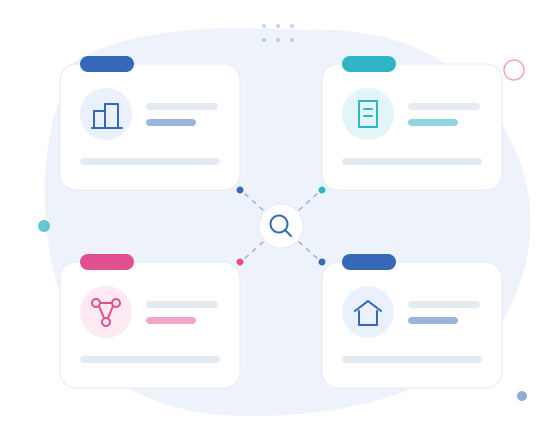

03 · Who we serve
More clarity, less noise.
A company, an independent activity, an online business or a specific tax situation all involve different obligations. Identify the profile closest to your reality and discover the areas in which Clave de Números can support your activity.

Four ways of working, four kinds of support.
Each profile gathers the most frequent areas and links to the page where the support is described in detail.
Companies and corporate entities
Accounting, tax compliance, payroll processing and management information for newly incorporated companies, companies that are growing, or those going through reorganisation.
Recently incorporated · Changing accountant · Growth or hiring
Profile 02Sole traders and freelancers
Registration and tax framework of the activity, invoicing, VAT, Social Security, income tax, and analysis of the move from the simplified regime to organised accounting.
Starting an activity · First documents · Sole trader or company
Profile 03Online businesses
Accounting and tax support for activities paid through platforms, selling remotely, or working with different payment methods, markets and currencies.
E-commerce · Remote services · Payment platforms
Profile 04Individuals with specific tax situations
Support with income tax returns that fall outside the routine, rental income, capital gains, income earned abroad and the organisation of property records.
Property · Capital gains · Foreign income
You may not be looking for a service. You may be facing a decision.
Choose the moment closest to your situation to go straight to the relevant information.
Where each profile is developed.
Companies being incorporated, growing or reorganising.
Open page02Sole traders and freelancersRegistering an activity, VAT, Social Security, income tax and regime choice.
Open page03Online businessesPlatforms, digital payments, markets and currencies.
Open page04For individualsIncome tax outside the routine, rental income, capital gains and property.
Open page